|
| G01 直线插补 |
1. 格式 G01 X(U)_ Z(W)_ F_ ; 直线插补以直线方式和命令给定的移动速率从当前位置移动到命令位置。  X, Z: 要求移动到的位置的绝对坐标值。 U,W: 要求移动到的位置的增量坐标值。 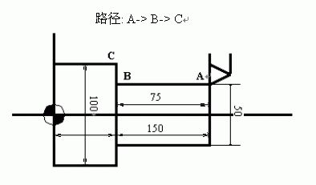
|
| G02/G03 圆弧插补 (G02, G03) |
1. 格式 G02(G03) X(U)__Z(W)__I__K__F__ ; G02(G03) X(U)__Z(W)__R__F__ ; G02 �C 顺时钟 (CW) 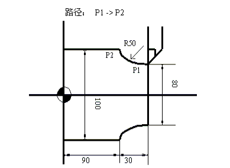
|

| G30 第二原点返回 (G30) |
坐标系能够用第二原点功能来设置。 1. 用参数 (a, b) 设置刀具起点的坐标值。点 “a” 和 “b” 是机床原点与起刀点之间的距离。 2. 在编程时用 G30 命令代替 G50 设置坐标系。 3. 在执行了第一原点返回之后，不论刀具实际位置在那里，碰到这个命令时刀具便移到第二原点。 4. 更换刀具也是在第二原点进行的。 |
| G32 切螺纹 (G32) |
1. 格式 G32 X(U)__Z(W)__F__ ; G32 X(U)__Z(W)__E__ ; F �C螺纹导程设置 E �C螺距 (毫米) 在编制切螺纹程序时应当带主轴转速RPM 均匀控制的功能 (G97)，并且要考虑螺纹部分的某些特性。在螺纹切削方式下移动速率控制和主轴速率控制功能将被忽略。而且在送进保持按钮起作用时，其移动进程在完成一个切削循环后就停止了。 2. 举例 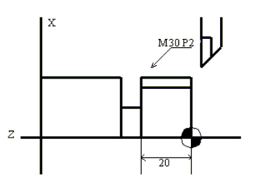 G00 X29.4; (1循环切削) G32 Z-23. F0.2; G00 X32; Z4.; X29.;(2循环切削) G32 Z-23. F0.2; G00 X32.; Z4. |
| G40/G41/G42 刀具半径偏置功能 (G40/G41/G42) |
1. 格式 G41 X_ Z_; G42 X_ Z_; 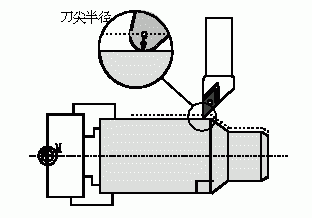 在刀具刃是尖利时，切削进程按照程序指定的形状执行不会发生问题。不过，真实的刀具刃是由圆弧构成的
(刀尖半径) 就像上图所示，在圆弧插补和攻螺纹的情况下刀尖半径会带来误差。 |
||||||||||||
|
||||||||||||
补偿的原则取决于刀尖圆弧中心的动向，它总是与切削表面法向里的半径矢量不重合。因此，补偿的基准点是刀尖中心。通常，刀具长度和刀尖半径的补偿是按一个假想的刀刃为基准，因此为测量带来一些困难。 把这个原则用于刀具补偿，应当分别以 X 和 Z 的基准点来测量刀具长度刀尖半径 R，以及用于假想刀尖半径补偿所需的刀尖形式数 (0-9)。  这些内容应当事前输入刀具偏置文件。 “刀尖半径偏置” 应当用 G00 或者 G01功能来下达命令或取消。不论这个命令是不是带圆弧插补，
刀不会正确移动，导致它逐渐偏离所执行的路径。因此，刀尖半径偏置的命令应当在切削进程启动之前完成；
并且能够防止从工件外部起刀带来的过切现象。反之，要在切削进程之后用移动命令来执行偏置的取消过 |
| G54-G59 工件坐标系选择(G54-G59) |
1. 格式 G54 X_ Z_; 2. 功能 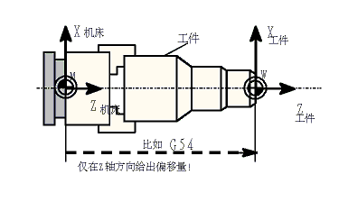 通过使用 G54 �C G59 命令，来将机床坐标系的一个任意点 (工件原点偏移值) 赋予 1221 �C 1226 的参数，并设置工件坐标系（1-6）。该参数与 G 代码要相对应如下： 工件坐标系 1 (G54) ---工件原点返回偏移值---参数 1221 工件坐标系 2 (G55) ---工件原点返回偏移值---参数 1222 工件坐标系 3 (G56) ---工件原点返回偏移值---参数 1223 工件坐标系 4 (G57) ---工件原点返回偏移值---参数 1224 工件坐标系 5 (G58) ---工件原点返回偏移值---参数 1225 工件坐标系 6 (G59) ---工件原点返回偏移值---参数 1226 在接通电源和完成了原点返回后，系统自动选择工件坐标系 1 (G54) 。在有 “模态”命令对这些坐标做出改变之前，它们将保持其有效性。 除了这些设置步骤外，系统中还有一参数可立刻变更G54~G59 的参数。工件外部的原点偏置值能够用 1220 号参数来传递。 |
| G 70 精加工循环(G70) |
1. 格式 G70 P(ns) Q(nf) ns:精加工形状程序的第一个段号。 nf:精加工形状程序的最后一个段号 2. 功能 用G71、G72或G73粗车削后，G70精车削。 |
| G 71 外圆粗车固定循环(G71) |
1. 格式 G71U(△d)R(e) G71P(ns)Q(nf)U(△u)W(△w)F(f)S(s)T(t) N(ns)…… ……… .F__从序号ns至nf的程序段,指定A及B间的移动指令。 .S__ .T__ N(nf)…… △d:切削深度(半径指定) 不指定正负符号。切削方向依照AA’的方向决定，在另一个值指定前不会改变。FANUC系统参数（NO.0717）指定。 e:退刀行程 本指定是状态指定，在另一个值指定前不会改变。FANUC系统参数（NO.0718）指定。 ns:精加工形状程序的第一个段号。 nf:精加工形状程序的最后一个段号。 △u：X方向精加工预留量的距离及方向。（直径/半径） △w: Z方向精加工预留量的距离及方向。 2. 功能 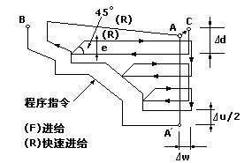 |
| G 72 端面车削固定循环(G72) |
1. 格式 G72W（△d）R(e) G72P(ns)Q(nf)U(△u)W(△w)F(f)S(s)T(t) △t,e,ns,nf, △u, △w，f,s及t的含义与G71相同。 2. 功能 如下图所示，除了是平行于X轴外，本循环与G71相同。 
|
| G 73 成型加工复式循环(G73) |
1. 格式 G73U(△i)W(△k)R(d) G73P(ns)Q(nf)U(△u)W(△w)F(f)S(s)T(t) N(ns)……… …………沿A A’ B的程序段号 N(nf)……… △i:X轴方向退刀距离(半径指定), FANUC系统参数（NO.0719）指定。 △k: Z轴方向退刀距离(半径指定), FANUC系统参数（NO.0720）指定。 d:分割次数 这个值与粗加工重复次数相同，FANUC系统参数（NO.0719）指定。 ns: 精加工形状程序的第一个段号。 nf:精加工形状程序的最后一个段号。 △u：X方向精加工预留量的距离及方向。（直径/半径） △w: Z方向精加工预留量的距离及方向。 2. 功能 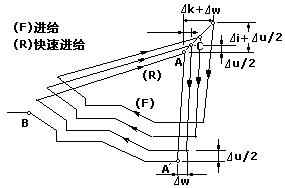
|
| G74 端面啄式钻孔循环(G74) |
1. 格式 G74 R(e); G74 X(u) Z(w) P(△i) Q(△k) R(△d) F(f) e:后退量 本指定是状态指定，在另一个值指定前不会改变。FANUC系统参数（NO.0722）指定。 x:B点的X坐标 u:从a至b增量 z:c点的Z坐标 w:从A至C增量 △i:X方向的移动量 △k:Z方向的移动量 △d:在切削底部的刀具退刀量。△d的符号一定是（+）。但是，如果X（U）及△I省略，可用所要的正负符号指定刀具退刀量。 f:进给率： 2. 功能 如下图所示在本循环可处理断削，如果省略X（U）及P，结果只在Z轴操作，用于钻孔。 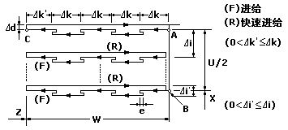
|
| G 75 外经/内径啄式钻孔循环(G75) |
1. 格式 G75 R(e); G75 X(u) Z(w) P(△i) Q(△k) R(△d) F(f) 2. 功能 以下指令操作如下图所示，除X用Z代替外与G74相同，在本循环可处理断削，可在X轴割槽及X轴啄式钻孔。 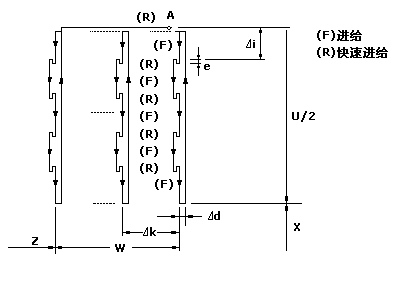 |
| G 76 螺纹切削循环(G76) |
1. 格式 G76 P(m)(r)(a) Q(△dmin) R(d) G76 X(u) Z(w) R(i) P(k) Q(△d) F(f) m:精加工重复次数（1至99） 本指定是状态指定，在另一个值指定前不会改变。FANUC系统参数（NO.0723）指定。 r:到角量 本指定是状态指定，在另一个值指定前不会改变。FANUC系统参数（NO.0109）指定。 a:刀尖角度： 可选择80度、60度、55度、30度、29度、0度，用2位数指定。 本指定是状态指定，在另一个值指定前不会改变。FANUC系统参数（NO.0724）指定。如：P（02/m、12/r、60/a） △dmin:最小切削深度 本指定是状态指定，在另一个值指定前不会改变。FANUC系统参数（NO.0726）指定。 i:螺纹部分的半径差 如果i=0,可作一般直线螺纹切削。 k:螺纹高度 这个值在X轴方向用半径值指定。 △d:第一次的切削深度（半径值） l：螺纹导程（与G32） 2. 功能 通常的编程方法，钻孔操作需要几个程序段，用固定循环只用一条指令，从而使编程大大简化。 |
| G90 内外直径的切削循环(G90) |
1. 格式 直线切削循环: G90 X(U)___Z(W)___F___ ; 按开关进入单一程序块方式，操作完成如图所示 1→2→3→4 路径的循环操作。U 和 W 的正负号 (+/-) 在增量坐标程序里是根据1和2的方向改变的。 锥体切削循环: G90 X(U)___Z(W)___R___ F___ ; 必须指定锥体的 “R” 值。切削功能的用法与直线切削循环类似。 2. 功能 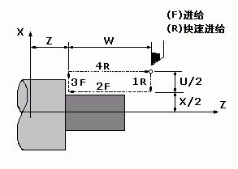 1. U<0, W<0, R<0  2. U>0, W<0, R>0  3. U<0, W<0, R>0  4. U>0, W<0, R<0 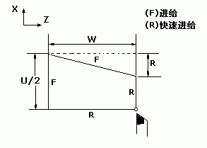 |
| G92 切削螺纹循环 (G92) |
1. 格式 直螺纹切削循环: G92 X(U)___Z(W)___F___ ; 螺纹范围和主轴 RPM 稳定控制 (G97) 类似于 G32 (切螺纹)。在这个螺纹切削循环里，切螺纹的退刀有可能如 [图 9-9] 操作；倒角长度根据所指派的参数在0.1L~ 12.7L的范围里设置为 0.1L 个单位。 锥螺纹切削循环: G92 X(U)___Z(W)___R___F___ ; 2. 功能 切削螺纹循环 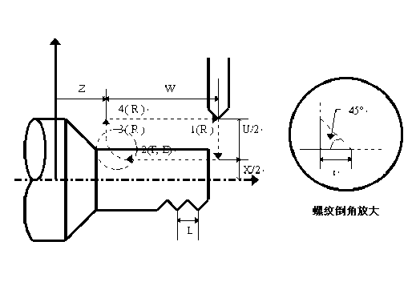  |
| G94 台阶切削循环 (G94) |
1. 格式 平台阶切削循环: G94 X(U)___Z(W)___F___ ; 锥台阶切削循环: G94 X(U)___Z(W)___R___ F___ ; 2. 功能 台阶切削 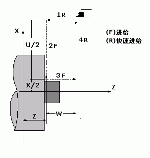  |
| G96/G97 线速度控制 (G96, G97) |
NC 车床用调整步幅和修改 RPM 的方法让速率划分成，如低速和高速区；在每一个区内的速率可以自由改变。 G96 的功能是执行线速度控制，并且只通过改变RPM 来控制相应的工件直径变化时维持稳定的切削速率。 G97 的功能是取消线速度控制，并且仅仅控制 RPM 的稳定。 |
| G98/G99 设置位移量 (G98/G99) |
切削位移能够用 G98 代码来指派每分钟的位移（毫米/分），或者用 G99 代码来指派每转位移（毫米/转）；这里 G99 的每转位移在 NC 车床里是用于编程的。 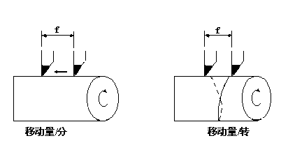 每分钟的移动速率 (毫米/分) = 每转位移速率 (毫米/转) x 主轴 RPM |